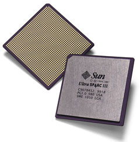
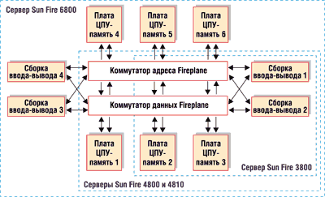
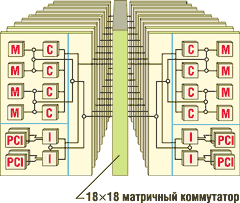
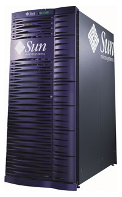

Андрей Борзенко
Важнейший элемент любой компьютерной информационной системы - это, безусловно, серверы, которые используются для надежного хранения данных, в качестве платформы для работы критически важных приложений, для предоставления пользователям вычислительной сети широкого спектра различных услуг. Неудивительно, что на фоне общего повышения требований к компьютерным сетям пользователи хотят иметь надежные серверы, обладающие соответствующими показателями производительности, отказоустойчивости, масштабируемости и управляемости, а также, что немаловажно, желают защитить свои капиталовложения, приобретая оптимальный с точки зрения затрат продукт. Лидер рынка RISC/UNIX-серверов - корпорация Sun Microsystems (http://www.sun.com), созданная в начале 80-х гг. в Стэнфордском университете (Калифорния, США), одном из известнейших в мире учебных заведений в области компьютеров. Полагают, что SUN - это аббревиатура от Stanford University Network. Таким образом, уже в самом названии компании была заложена идея сетевых вычислений.
Основатели Sun Microsystems разделяли общую мечту об использовании отраслевых стандартов, создав компанию, основанную на открытых системах и сетевых вычислениях. Первоначальные основополагающие решения задали тон для будущих инновационных проектов. Сочетание готовых компонентов, свободно доступной ОС и простого дизайна позволило компании Sun Microsystems очень быстро предложить рынку первую мощную и доступную рабочую станцию для технических специалистов.
Официально компания была зарегистрирована в феврале 1982 г., и в том же году была выпущена ее первая рабочая станция. За последующий, 1983 г. ей удалось почти невозможное: Sun обыграла главного на тот момент конкурента, компанию Apollo. Напомним, что в начале 80-х идея создания высокопроизводительной рабочей станции была чрезвычайно актуальной и привлекала к себе всеобщее внимание. Число компаний, вышедших на рынок со своими близкими по параметрам компьютерами, которые можно назвать рабочими станциями, превысило полсотни. Выпустив систему Sun-1, компания, конечно, не была первой на рынке рабочих станций, но оказалась и далеко не последней, опередив, например, такие корпорации, как Digital Equipment (DEC) и IBM. Благодаря использованию новых графических и сетевых технологий, которые раньше были доступны только в дорогих "закрытых" устройствах, Sun Microsystems удалось достичь оптимального соотношения цена/производительность.
Начальная стратегия фирмы, направленная больше на расширение рынка, нежели на быстрые доходы, принесла пользу не только Sun, но и партнерам, и - больше всего - клиентам. Первый шаг в этом направлении был сделан, когда технология NFS в качестве открытого стандарта была предложена в 1984 г. для свободного лицензирования. Год спустя начались работы над процессором SPARC. По сути, разрабатывались система команд и архитектура, которые обеспечивали бы наиболее быстрое и дешевое выполнение ПО под управлением UNIX. Ни Intel, ни Motorola не согласились изготавливать RISC-процессоры, первой это предложение приняла компания Fujitsu. А уже в 1987 г. на базе SPARC появилась рабочая станция Sun-4. В том же году архитектура SPARC была предложена для лицензирования.
Превратив ОС UNIX в свою ключевую технологию, практически бесплатно предоставив отрасли сетевую файловую систему (NFS) и лицензируя архитектуру SPARC и операционную среду Solaris, компания Sun Microsystems создала благодатную почву для инвестиций тысяч компаний и их успеха на рынке открытых систем.
Архитектура UltraSPARC
Авторитетное издание Microprocessor Report (MicroDesign Resource) совершенно справедливо присвоило звание лучшего процессора для серверов и рабочих станций микросхеме UltraSPARC III. Архитектура SPARC (Scalable Processor ARChitecture) - одна из самых распространенных среди RISC-систем. Процессоры SPARC лицензированы и изготавливаются по спецификациям Sun Microsystems несколькими фирмами-производителями. Отделение микроэлектроники этой корпорации занимается разработкой и распространением не только высокопроизводительных процессоров, но и системных плат на их основе, а также лицензий на использование ядра SPARC- и Java-процессоров. Вся продукция ориентирована на OEM-производителей компьютеров, телекоммуникационного оборудования, бытовых электронных устройств, средств автоматизации производства и т. п. Поскольку Sun Microsystems разрабатывает вычислительные системы от начала до конца (т. е. от микропроцессоров и архитектуры вычислительной системы до ПО), то все этапы разработки проходят в рамках единой концепции, что дает определенные преимущества по сравнению с конкурентами.
Об успехах технологий Sun говорит тот факт, что ежегодно на рынок поставляется несколько миллионов устройств, использующих ядро процессоров SPARC. Гибкая стратегия корпорации позволяет минимизировать риск, связанный с циклом разработки новых процессоров, а также защищает капиталовложения заказчиков в архитектуру SPARC за счет полной двоичной совместимости новых процессоров с процессорами предыдущих поколений. В частности, стратегия уменьшения риска заключается в том, что при разработке каждого следующего процессора компания концентрирует свои усилия лишь на одном из трех основных аспектов: архитектуре процессора, технологии его производства или системе команд.
В производстве процессоров SPARC Sun Microsystems тесно сотрудничает с компанией Texas Instruments (http://www.ti.com), более десяти лет используя производственные мощности последней для создания полупроводниковых компонентов. Сотрудничество здесь обоюдовыгодное: технологии, которые применяются для создания процессоров, Texas Instruments затем использует при создании своих собственных продуктов. Напомним, что первый 32-разрядный чип SPARC, работавший на тактовой частоте 36 МГц и показавший производительность 16 MIPS, был выпущен еще в 1987 г. (но на заводе Fujitsu). Именно на основе этого процессора и была разработана первая рабочая станция Sun-4.
В ноябре 1995 г. появились 64-разрядные процессоры UltraSPARC I, содержащие 5,2 млн транзисторов и выполненные с учетом проектных норм 0,5 мкм. Тактовые частоты составляли 143, 167 и 200 МГц. Кроме этого, были объявлены процессоры UltraSPARC II с тактовыми частотами от 250 до 300 МГц. При ужесточении проектных норм до 0,25 мкм количество транзисторов возросло до 5,4 млн, а тактовые частоты - до 336-450 МГц. Стоит отметить, что в том же году фирма HAL Computer, принадлежащая Fujitsu, начала выпуск 64-разрядных кристаллов SPARC64, имеющих ту же архитектуру - SPARC V9. До настоящего времени SPARC64 и UltraSPARC конкурируют на рынке.
Основные характеристики UltraSPARC определяются следующими его конструктивными особенностями:
- на кристалле реализована раздельная кэш-память команд и данных;
- широкая выборка команд (128 разрядов);
- эффективные средства динамического прогнозирования направления переходов;
- девятиступенчатый конвейер, обеспечивающий выдачу для выполнения до четырех команд в каждом такте;
- оптимизация конвейерных операций обращения к памяти;
- реализованы команды обмена данными между памятью и регистрами плавающей точки, что позволяет не приостанавливать диспетчеризацию команд обработки;
- устройства управления памятью интегрированы на кристалле;
- набор команд расширен для поддержки графики и обработки изображений;
- новая архитектура шины UPA.
В состав UltraSPARC входят устройства: предварительной выборки и диспетчеризации команд, целочисленной (исполнительное) и вещественной арифметики (с графическим блоком), управления памятью, загрузки/записи, управления внешней кэш-памятью, управления интерфейсом памяти и кэш-памяти команд и данных.
Кэш-память команд представляет собой двухканальную множественно-ассоциативную кэш-память емкостью 16 Кбайт. Она организована в виде 512 строк, содержащих по 32 байта данных. Для кэш-памяти данных с прямым отображением емкостью 16 Кбайт реализуется алгоритм сквозной записи. Она организована в виде 512 строк, в каждой из которых размещаются два 16-байтных подблока данных. С каждой строкой связан соответствующий адресный тег. Все обращения к внешней кэш-памяти конвейеризованы, выполняются за три такта и осуществляют пересылку 16 байт команд или данных за каждый такт.
Конвейерное устройство плавающей точки процессора UltraSPARC построено в соответствии со спецификациями архитектуры SPARC V9 и стандарта IEEE 754. Оно состоит из пяти отдельных функциональных устройств и обеспечивает выполнение операций с плавающей запятой и графических операций. Реализация раздельных исполнительных устройств позволяет UltraSPARC выполнять две операции вещественной арифметики в каждом такте.
В процессорах UltraSPARC II введен новый набор инструкций VIS (Video Instruction Set), включающий команды: упаковки и распаковки пикселов; параллельного сложения, умножения и сравнения данных, представленных в нескольких целочисленных форматах; выравнивания и слияния; обработки контуров изображений и адресации массивов.
Архитектура UPA (Ultra Port Architecture) определяет логические и физические интерфейсы порта системной шины и требования, накладываемые на организацию межсоединений. UPA не только поддерживает отдельные шины адреса и данных, но и позволяет иметь несколько шин с организацией соединений точка-точка. Благодаря этому минимизируется число циклов арбитража и уменьшается вероятность конфликтов.
На площади около 300 мм2 микросхема UltraSPARC III (рис. 1) содержит 29 млн транзисторов; она выполнена с учетом проектных норм 0,18 мкм с шестью слоями металлизации. Технологический процесс позволяет использовать как алюминиевые, так и медные межсоединения. Кристалл упакован в керамический корпус типа BGA с 1368 контактными выводами. Потребляемая мощность на частоте 750 МГц не превышает 70 Вт.
|  | Рис. 1. Микропроцессор UltraSPARC III.
|
В состав устройства входят: шесть исполнительных блоков (четыре для целочисленной и два для вещественной арифметики; кэш-память команд и данных объемом 32 и 64 Кбайт соответственно; кэш-память предвыборки и записи объемом по 2 Кбайт каждая; системный интерфейс; контроллер основной памяти; контроллер кэш-памяти второго уровня и таблица тегов (с поддержкой внешней кэш-памяти до 8 Мбайт). UltraSPARC III имеет 14-ступенчатый конвейер, причем шесть ступеней отводится на подготовку к выполнению команд, столько же - на их исполнение, а две последние - завершающие. Устройство предсказания переходов представляет собой таблицу на 16 Кбайт значений, содержащую информацию об уже имевших место ветвлениях, и обеспечивает точность предсказаний на тестах SPEC95 на уровне 95%.
У процессора имеется три внешних интерфейса: 128-разрядный канал обмена с основной памятью, 256-разрядный канал обмена с кэш-памятью второго уровня и 128-разрядный системный интерфейс. Производительность каналов процессор-память, шина-память и кэш-память-процессор составляет соответственно 2,4; 4,8 и 6,4 Гбайт/с.
По информации самой компании, одна только замена микропроцессора UltraSPARC III 750 МГц на модель с медными межсоединениями и тактовой частотой 900 МГц позволяет получить 20%-ный прирост производительности. В свою очередь, испытания UltraSPARC III 1,05 ГГц показали, что этот кристалл оказался втрое быстрее UltraSPARC III 900 МГц.
В данное полупроводниковое устройство введено несколько усовершенствований, отчасти благодаря модернизации завода Texas Instruments в Далласе, где эти процессоры выпускаются по технологии с медными проводниками и минимальным размером элементов 150 нм (0,15 мкм). При производстве используется также технология "диэлектрик low-K", способствующая уменьшению потребляемой энергии.
По имеющейся информации, Sun Microsystems работает также над малопотребляющей версией UltraSPARC IIIi (Jalapeno), предназначенной для систем с числом процессоров от одного до четырех. Этот кристалл будет производиться с соблюдением проектных норм 0,13 мкм и содержать 87 млн транзисторов. Емкость встроенной в кристалл высокоскоростной кэш-памяти составит 1 Мбайт. Jalapeno позволит отключать неиспользуемые секции процессора с целью экономии энергии. Кроме того, в этом кристалле впервые применяется изобретение Sun: асинхронные каналы передачи данных, позволяющие управлять разными частями процессора с разной тактовой частотой.
Мидфреймы
Sun Microsystems удалось создать серверы, относящиеся к среднему классу машин (midrange), но при этом обладающие рядом функциональных возможностей, которые до недавнего времени были присущи только мэйнфреймам. Они получили название мидфреймов (рис. 2). Первая черта, сближающая Sun Fire с мэйнфреймами, - высокая готовность. Она достигается благодаря нескольким особенностям архитектуры: прежде всего полным дублированием абсолютно всех элементов, включая даже системные часы, и отсутствием единственной точки сбоя. Обеспечивается не только горячая замена дисков - "горячими" стали и такие функции, как замена процессоров и внесение изменений в ОС. Основные параметры серверов линейки Sun Fire приведены в таблице.
|  |
| Рис. 2. Блок-схема "мидфрейм"-серверов.
|
Некоторые параметры серверов SunFire
| Модель | Sun Fire 3800 | Sun Fire 4800 | Sun Fire 4810 | Sun Fire 6800 | Sun Fire 12K | Sun Fire 15K |
| Максимальное число процессоров UltraSPARC III | 8 | 12 | 12 | 24 | 52 | 72 (106) |
| Емкость оперативной памяти, Гбайт | 64 | 96 | 96 | 192 | 288 | 576 |
| Число доменов | 2 | 2 | 2 | 4 | 9 | 18 |
| Число шин ввода-вывода | 4 | 4 | 4 | 8 | 18 | 18 |
| Число и тип слотов ввода-вывода | 12 cPCI | 16 PCI | 16 PCI | 32 PCI | 36 PCI | 72 PCI |
Sun Fire 3800
Для информационных служб многих российских предприятий может быть интересен сервер модели 3800. Этот компактный, надежный и производительный сервер представляет собой платформу для обеспечения непрерывной и бесперебойной работы приложений электронной почты, Web-хостинга, реляционных баз данных и систем управления производством, т. е. таких приложений, которым требуется минимальное время простоя системы и высокий уровень доступности. Полное дублирование всех компонентов оборудования и различные средства обеспечения высокой готовности позволяют Sun Fire 3800 успешно справляться с этими задачами. Невысокая (по сравнению с остальными моделями) стоимость данного сервера делает его доступным для многих предприятий.
Основой данного сервера служит системная шина межкомпонентных соединений Sun Fireplane (рис. 3), обеспечивающая в установившемся режиме пропускную способность 9,6 Гбайт/с, при этом совокупная пропускная способность достигает 24 Гбайт/с. Сервер может иметь от двух до восьми процессоров UltraSPARC III, объем оперативной памяти достигает 64 Гбайт, для дополнительных плат расширения имеется 12 слотов сPCI (compactPCI), поддерживающих режим горячей замены. Четыре слота работают на тактовой частоте 66 МГц и восемь - на частоте 33 МГц.
|  |
| Рис. 3. Структурная схема межсоединений Sun Fireplane.
|
Несомненное достоинство сервера - полная аппаратная резервируемость его компонентов: системного контроллера, процессора, памяти, источника питания, системного таймера, вентиляторов и т. д. Наряду с данной функцией у него есть возможности, ранее доступные лишь в компьютерах класса мэйнфрейм. В частности, это горячая замена процессоров, динамическое переконфигурирование, два динамических системных домена (что позволяет запускать на одном сервере несколько копий критически важных приложений и динамически распределять между ними системные ресурсы), поддержка кластеризации. Обеспечив при этом единую конструкцию основных модулей для всей линейки серверов, компания Sun достигла тем самым высокого уровня защиты капиталовложений своих покупателей. Другими словами, системы, построенные на основе серверов этого класса, обладают высокой масштабируемостью, что позволяет наращивать ресурсы информационных систем по мере роста предприятия, не приобретая новой техники. Сервер выполнен в конструктиве 8,5U и устанавливается в монтажную стойку Sun Fire или в стандартный 19-дюймовый монтажный шкаф.
Для управления сервером служит сетевое ПО Sun Management Center, которое позволяет системным администраторам активно управлять как одной, так и тысячами систем через JavaTM-интерфейс, Web-браузер или интерфейс командной строки. Кроме того, в комплект поставки включается дополнительное сервисное системное и сетевое ПО. Все серверы Sun Fire работают под управлением масштабируемой и защищенной ОС Solaris 8 и оснащаются аналогичным комплектом системного и сетевого ПО.
Sun Fire 4800 и 4810
Сервер Sun Fire 4800 специально разработан для функционирования в среде крупных вычислительных центров, рассчитанных на непрерывный режим работы. Он обладает хорошими характеристиками доступности, надежности, удобства в управлении и оптимизирован для работы с базами данных, системами управления производством, проведения высокопроизводительных вычислений или консолидации нагрузки. Благодаря полному дублированию всех компонентов оборудования и разнообразным средствам обеспечения высокой готовности достигается максимально возможное время непрерывной работы системы.
Модель 4810 предназначена для эксплуатации в телекоммуникационных компаниях и Интернет-центрах. В таких местах площади для установки оборудования обычно существенно ограничены, и важным требованием становится доступ к компонентам только с одной стороны. Конструкция сервера Sun Fire 4810 разработана с учетом того, что они будут монтироваться в стойки глубиной 30 дюймов; что же касается архитектуры и технических характеристик, то они полностью совпадают с Sun Fire 4800.
Эти серверы также построены на основе системной шины Sun Fireplane с пропускной способностью в установившемся режиме 9,6 Гбайт/с и совокупной пропускной способностью 33,6 Гбайт/c. В конфигурацию может входить от двух до двенадцати 64-разрядных процессоров UltraSPARC III. Емкость оперативной памяти сервера расширяется до 96 Гбайт. Для дополнительных плат расширения имеется 16 слотов PCI, четыре из которых работают на частоте 66 МГц и двенадцать - на частоте 33 МГц. Из восьми слотов PCI, поддерживающих режим горячей замены, четыре функционируют на частоте 66 МГц и четыре - на частоте 33 МГц.
Данные серверы, как и все семейство Sun Fire, характеризуются полной аппаратной резервируемостью компонентов. Высота шасси для Sun Fire 4800 составляет 17,5U, а для Sun Fire 4810 - 21U. Корпуса устройств могут устанавливаться либо непосредственно на пол, либо размещаться в монтажной стойке Sun Fire или стандартном 19-дюймовом монтажном шкафу.
Sun Fire 6800
Этот сервер предназначен для работы критически важных приложений - задач поддержки принятия решений, консолидации нагрузки многих серверов и других задач, характерных для крупных вычислительных центров. Полное резервирование всех компонентов оборудования и различные средства обеспечения высокой готовности дают системе максимально возможное время непрерывной работы. Сервер Sun Fire 6800 предназначен для использования в крупных вычислительных центрах, где главные требования состоят в управляемости, производительности и высокой готовности.
Полностью дублированная системная шина межкомпонентных соединений Sun Fireplane обеспечивает хорошие показатели общей производительности системы: пропускная способность достигает 9,6 Гбайт/с (в установившемся режиме) и 67,2 Гбайт/c (совокупная). Количество устанавливаемых 64-разрядных процессоров UltraSPARC III варьирует от двух до двадцати четырех. Сервер может иметь до 192 Гбайт оперативной памяти. Для дополнительных плат расширения предусмотрено 32 слота PCI, восемь из которых работают на частоте 66 МГц и 24 - на частоте 33 МГц. Из 16 слотов PCI, поддерживающих режим горячей замены, восемь работают на частоте 66 МГц и восемь - 33 МГц.
В отличие от предыдущих моделей, Sun Fire 6800 поддерживает не два, а четыре динамических системных домена. Высота корпуса сервера составляет 28U.
Sun Fire 12K
Новый сервер под кодовым названием Starkitty стал ответом Sun на 16-процессорную систему IBM p670, базирующуюся на процессорах Power4. По мнению экспертов, Sun Fire 12K заполнил брешь в средней области спектра продуктов корпорации. Новая система была создана относительно быстро во многом потому, что ее основной конструктивный блок Uniboard может применяться в пределах всего семейства продуктов Sun Fire. В линейке серверов Starkitty попадает в промежуток между 24-процессорным Sun Fire 6800 и 72-процессорным Sun Fire 15K.
Сервер построен на основе микропроцессоров UltraSPARC III с медными межсоединениями. Динамическая реконфигурация (до 9 системных разделов) дает целый спектр инструментов для выбора процессорной мощности, размера оперативной памяти или пропускной способности ввода-вывода. На каждой из плат размещается четыре процессора и до 32 Гбайт памяти, что обеспечивает общий ее объем до 288 Гбайт на систему. Для операций ввода-вывода предусмотрено 36 слотов PCI с возможностью горячей замены. При этом 18 слотов работают на частоте 66 МГц и 18 - на частоте 33 МГц.
Возможна модернизация сервера до уровня Sun Fire 15K.
Флагман - Sun Fire 15K
Чтобы обеспечить пользователям весь спектр услуг, нужна архитектура, обладающая не только гибкостью и приемлемой ценой, но и соблюдающая следующие основные принципы проектирования:
- совместимость, которая позволяет компаниям объединять работу приложений, ОС и т. п., несмотря на использование различных платформ;
- универсальность, обеспечивающая долговременное использование ресурсов и легкость конфигурирования их под текущие задачи;
- простота и взаимозаменяемость всех компонентов, гарантирующие быстрое восстановление системы.
Сервер Sun Fire 15K (рис. 4), ранее известный под кодовым названием StarCat, обладает всеми перечисленными выше качествами. Он создан на базе масштабируемой многопроцессорной архитектуры общего назначения и пригоден для решения практически любых задач - от научных и инженерных до деловых. Конструктивные особенности сервера позволяют радикально снизить совокупную стоимость владения большими вычислительными мощностями. Это достигается за счет консолидации функций, ранее выполнявшихся несколькими отдельными серверами, а также перенесения на данный сервер задач с дорогих в эксплуатации мэйнфреймов (при том, что сохраняется отдача от уже произведенных затрат на обучение персонала, инструментальные средства и прикладное ПО).
|  | Рис. 4. Сервер Sun Fire 15K.
|
Компьютер допускает установку до 106 64-разрядных процессоров UltraSPARC III, и предусмотрена возможность наращивания их количества до тысячи и выше. Под управлением ОС Solaris 8 обеспечивается практически линейная масштабируемость и высокая скорость исполнения прикладных программ. Планы развития семейства процессоров UltraSPARC предусматривают выпуск процессоров с тактовыми частотами до 1,8 ГГц и выше; имеющиеся машины предлагается модернизировать путем установки в них новых процессоров непосредственно на месте эксплуатации. Конструкция сервера Sun Fire 15K допускает замену процессоров в горячем режиме, что позволяет включать в ее состав новые ресурсы, не прерывая работы.
Сердце машины - системная шина межкомпонентных соединений Sun Fireplane, на изготовление которой уходит около 8 км проводов и кабелей. Она обладает совокупной пропускной способностью до 172 Гбайт/с на таковой частоте 150 МГц. Такой уровень пропускной способности, а также высокая производительность работы самых разных приложений достигается за счет применения в конструкции шины схемы тройной коммутационной матрицы (triple crossbar) 18х18 для данных и адресов.
В сервер может быть установлено до 18 плат процессор/память; на каждой размещается 4 процессора и до 32 Гбайт памяти, что обеспечивает общий объем памяти до 576 Гбайт на систему. Благодаря технологии Uniboard платы стандартны для всей линии серверов Sun Fire 3800 - 15К. Для операций ввода-вывода предусмотрено до 72 слотов PCI на 18 каналах с возможностью горячей замены. При этом 36 слотов работают на частоте 66 МГц и 36 - на частоте 33 МГц. Обеспечивается поддержка следующих адаптеров: Sun Gigabit Ethernet FC-AL/P Combination Adapter, Sun Dual Fast Ethernet и Dual SCSI/P Adapter, Sun Dual Differential UltraSCSI Host Adapter, Sun Quad FastEthernet, SunATM 622, Sun HIPPI/P 1.0, Serial Asynchronous Interface Adapter.
ПроизводительностьСразу после выпуска Sun Fire 15K корпорация объявила о рекордной производительности этого сервера. Так, результаты теста SPECjbb2000 составили 324 542 операции в секунду, что в 2,5 раза превысило показатели конкурентов. Результаты того же теста, проведенного в начале мая с использованием процессоров с тактовой частотой 1,05 ГГц, превысили 600 тыс. jbb-операций в секунду. SPECjbb2000 (Java Business Benchmark) - это тест компании SPEC (Standard Performance Evaluation Corp.) для оценки производительности серверных приложений на основе технологии Java. Тест моделирует процесс вычислений, выполняемый по трехуровневой схеме, наиболее часто встречающийся среди серверных Java-приложений. В частности, SPECjbb2000 направлен на тестирование бизнес-логики и манипуляции объектами, а также работы среднего слоя нагрузки сервера, основанного на технологии Java. Тестируемая нагрузка типична для уровня "критически важный для функционирования предприятия в целом" и включает в себя такие функции, как обработка заказов, запросов и платежей. Проведенный тест SAP-Standard Sales and Distribution (SD) Application на конфигурации, включающей сервер Sun Fire 15K и систему хранения данных Sun StorEdge T3, поддерживающей 4100 пользователей, показал следующие результаты: среднее время ответа на запрос 1,88 с; 414 000 процессов обработки заказов в час. Тест SAP-Standard SD Application - это двухуровневый тест, определяющий полную нагрузку процесса обработки заказов, включающую собственно оформление заказа, генерацию уведомлений о доставке, размещение заказа, отправление подтверждения наличия товара, создание списка заказов и генерация счетов. Тест демонстрирует способность одновременной работы приложений и ПО баз данных на одной системе. Сервер Sun Fire 15K продемонстрировал возможность консолидации двухуровневой нагрузки на одном сервере, что отвечает растущей необходимости в консолидации серверов для быстрого преодоления сбоев, упрощения операций и снижения общей стоимости владения. В начале этого года в тесте TPC-H сервер Sun Fire 15K показал результаты 18802,1 QphH@ 1000GB при соотношении цена/производительность $287/QphH@1000GB. Тест TPC-H отображает работу с запросами, поступающими в непредсказуемом порядке. Это типичный тест для систем анализа данных и поддержки принятия решений. Тестирование проводилось на 72-процессорном сервере Sun Fire 15K с процессорами UltraSPARC III с тактовой частотой 900 МГц и 288 Гбайт оперативной памяти. В конфигурацию системы также входили 17 систем хранения данных StorEdge A5200.Тест проводился на предварительном релизе Oracle 9i. |
Сервер обладает такими возможностями, как одновременное динамическое изменение конфигурации (для одновременного обслуживания в режиме online), полное резервирование аппаратных средств (для устранения неплановых простоев), автоматическая передача рабочей нагрузки с неисправных на работоспособные элементы (для бесперебойного выполнения критически важных функций управления ресурсами и мониторинга).
В сервере Sun Fire 15K применена система динамических системных доменов (Dynamic System Domains) пятого поколения. В числе ее особенностей - защищенная архитектура системных разделов, независимое выведение процессоров и памяти из домена и переподчинение их другим доменам. Таким образом, до 18 динамических системных доменов обеспечивают безопасное, защищенное от сбоев, динамическое разделение ресурсов одного сервера.
ОС Solaris поддерживает такие возможности, как работа в кластере по технологии SunPlex, модернизация в процессе эксплуатации (Live Upgrade), исправление ошибок ОС в горячем режиме (Hot Patching), динамическое изменение конфигурации (Dynamic Reconfiguration), мониторинг в удаленном режиме, управление ресурсами, распределение полосы пропускания и автоматическое восстановление системы после сбоя. Все это позволяет минимизировать время плановых и внеплановых простоев и добиться уровня бесперебойности, необходимого для поддержки прикладных служб, критически важных для работы предприятия.
В число новых сервисов Sun Microsystems теперь входят следующие услуги: консолидация вычислительных ресурсов и перенос ПО, обеспечение высокого уровня бесперебойности (высокой готовности), а также RAS Profile ("профиль надежности, готовности, обслуживаемости"), в составе которой заказчик получает доступ к 1300 правилам оптимизации конфигураций, сформированных на основе практического опыта и сконцентрированных в базе знаний.
Кластерная платформа позволяет заказчикам значительно сократить совокупную стоимость владения вычислительной техникой за счет перехода на более простую, надежную и быстродействующую инфраструктуру высокой готовности. Полностью интегрированная кластерная платформа для переноса приложений с мэйнфреймов SunTone Cluster Platform состоит из двух серверов Sun Fire 15K, системы хранения данных Sun StorEdge 9960 и ПО Sun Cluster 3.0. Данное решение позволяет довести бесперебойность работы комплекса до уровня 99,999%.
Для того чтобы подтолкнуть заказчиков к отказу от мэйнфреймов в пользу решений Sun, корпорация объявила о покупке отделения компании Critical Path, которое специализируется на предоставлении услуг переноса ПО с мэйнфреймов на другие платформы. По мнению руководства корпорации, эта сделка позволит Sun предложить заказчикам инструменты и услуги, которые помогут им перейти из среды мэйнфреймов на Sun Fire 15K. Основным станет ПО, позволяющее преобразовывать приложения из ОС мэйнфреймов в Sun Solaris с минимальными изменениями в исходных текстах.
В заключение отметим, что одним из первых заказчиков сервера Sun Fire 15K стал крупнейший Суперкомпьютерный центр в Сан-Диего, США (San Diego Supercomputer Center).
| По итогам закрытого тендера российская корпорация "Юни" (http://www.uni.ru) подписала соглашение об оснащении программно-аппаратным комплексом Информационно-вычислительного центра Югорского научно-исследовательского института информационных технологий (ЮНИИ ИТ, г. Ханты-Мансийск). В рамках совместного проекта с Sun Microsystems ("Юни" имеет статус Sun Service Manager) компания поставит в ЮНИИ ИТ сервер SunFire 15K, кластер на базе 12 серверов SunFire 280R, Интернет-портал на основе СУБД Oracle, а также геофизическое ПО фирмы Landmark. |